DTCL MÙA 7 - THẾ GIỚI LOÀI RỒNG
- Dự kiến ra mắt trên máy chủ PBE vào ngày 25/5
- Dự kiến ra mắt trên máy chủ VN vào ngày 8/6

DTCL mùa 6.5 đang bước đến giai đoạn cuối mùa giải và phiên bản tiếp theo - DTCL mùa 7 đang dần được hé lộ. Cùng điểm qua những điều thú vị sẽ có trong phiên bản sắp tới.
-- Lưu ý: thông tin mà chúng tôi cập nhật dưới đây có thể thay đổi khi phiên bản thật sự tới tay người chơi --
Hệ tộc DTCL mùa 7
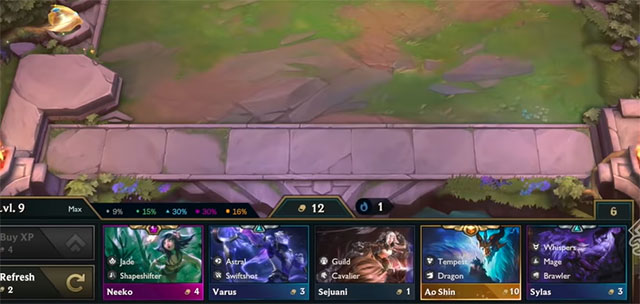Bao gồm các tộc hệ sau:
- Dragon (Đại Long)
- Tempest (Bão Tố)
- Jade (Ngọc)
- Astral (Tinh Tú)
- Swiftshot (Liên Xạ)
- Whispers (Kẻ Thì Thầm)
- Mage (Pháp Sư)
- Brawler (Đấu Sĩ)
- Blademaster (Kiếm Khách)
- Revel (Lễ Hội)
- Shapeshifter (Biến Hình)
- Dragonspirit (Long Hồn)
- Illusionist (Ảo Thuật Gia)
- Piercer (Thương Thủ)
- Druid (Ẩn Sĩ)
- Lacerator (Xé Xác)
- Bulwark (Phòng Vệ)
- Coven (Tiên Hắc Ám)
- Apprentice (Tập Sự)
- Destiny (Số Mệnh)
- Guild (Bang Hội)
- Ruffian (Tàn Nhẫn)
- Eclipse (Nhật Thực)
- Cavalier (Kỵ Sĩ)
- Celestial (Vũ Trụ)
- Lancer (Kỵ Binh)
Các Tướng DTCL Mùa 7
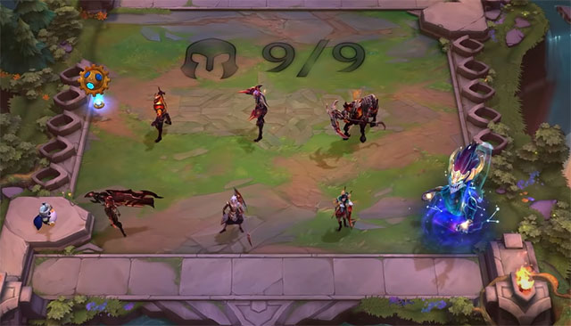Bao gồm:
- Ashe
- Galio
- Jinx
- Swain
- Senna
- Illaoi
- Corki
- Twitch
- Jayce
- Lucian
- Sejuani
- Kai'Sa
- Aurelion Sol
- Neeko
- Xayah
- Shyvana
- Shen
- Kayn
- Yone
- Sett
- Hecarim
- Vladimir
- Skarner
- Nami
- Thresh
- Zed
- Sona
- Ryze
- Xin Zhao
- Cassiopeia
- Wukong
- Yasuo
- Nidalee
- Karma
- Volibear
Sự kiện Điều Ước Rồng Thần
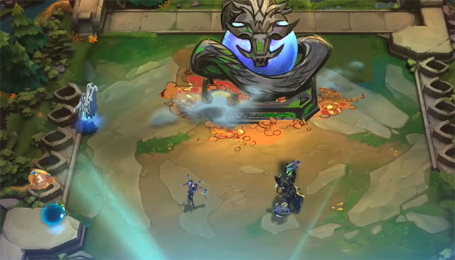Điều Ước Rông Thần là cơ chế mới được thêm vào, tại vòng bãi chim Quỷ Biến Dị thay vì chiến đấu với chúng thì bạn sẽ được rồng thần ban tặng cho 1 điều ước. Khi thực hiện điều ước bạn có thể nhận được trang bị thành phần, trang bị hoàn chỉnh, vàng..., nó hoạt động khá giống kho vũ khí tại DTCL mùa 6, 6.5. ĐẶC BIỆT: bạn có thể "mặc cả" với rồng thần nếu điều ước Rồng Thần cho không đúng theo ý muốn của bạn, mỗi lần như vậy sẽ mất 1 vàng.
Tộc Đại Long
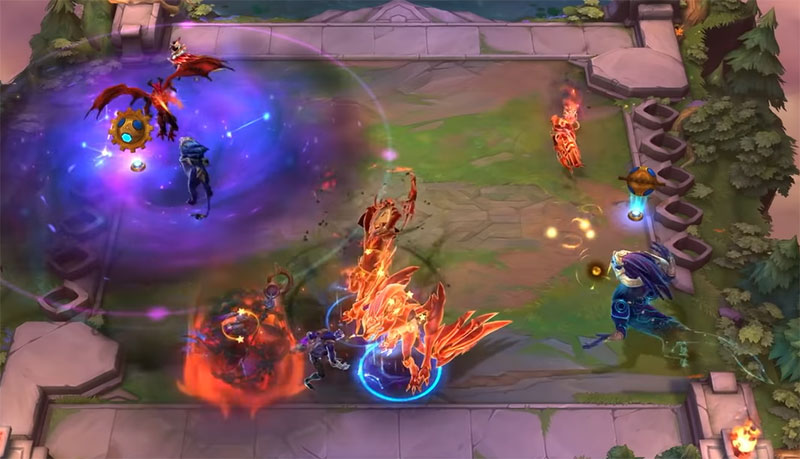Có tổng cộng 7 con Đại Long trong mùa 7 này, mỗi con Đại Long sẽ chiếm 2 slot giống Khổng Lồ trong DTCL 6.5 hiện tại và có thể có giá lên đến 10 vàng trong shop. Chúng sở hữu lượng máu lớn và sẽ được tính thêm 3 mốc hệ tộc của chúng.
Điện Thờ Rồng
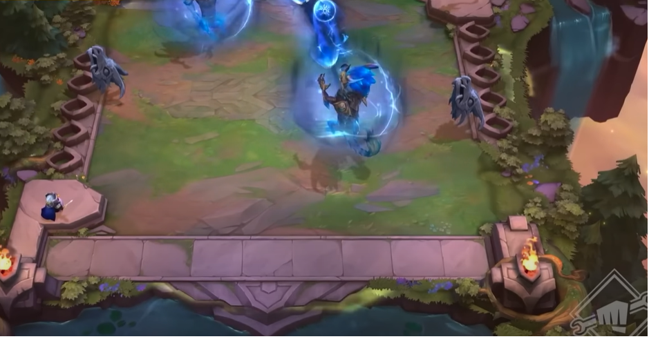Lõi Công Nghệ được chuyển thành Điện Thờ Rồng nhưng các Nâng cấp công nghệ vẫn giữ nguyên và một số lõi công nghệ được bổ sung:
- Think Fast: Được reset của hàng miễn phí cho đến khi hết vòng đấu.
- Bloodlust: Mỗi khi tướng của bạn hạ gục được 1 tướng địch sẽ được cộng vĩnh viễn 2 Sát Thương Vật Lý.
- Tiamat: Mỗi khi tướng Kiếm khách đánh thường sẽ gây thêm sát thương lên các tướng xung quanh mục tiêu trong phạm vi 1 ô lượng sát thương bằng 33% sát thương gây ra. Nhận 1 Yone.
- Eternal Protection: Khi tướng không phải tướng Ngọc sắp bị tiêu diệt, 1 tướng Ngọc gần nhất sẽ chết thay, cùng lúc chuyển cho vị tướng đó một lượng máu bằng 200% máu tối đa của tướng Ngọc đã hy sinh. Nhận 1 Ashe.
- Sacrificial Pact: Thay vì mua kinh nghiệm bằng vàng thì bạn có thể trả 3 máu.
- Revel Crest: Nhận một tướng Jinx và một Ấn Lễ Hội.
- Eye of the Storm: Vị tướng ỏ giữa bàn cờ của bạn mỗi giây sẽ nhận thêm 2 năng lượng và 20 sức mạnh phép thuật. Nếu bị sét đánh thì các chỉ số này sẽ nhân 3. Nhận thêm 1 Lee Sin.
Cơ chế Trứng Rồng
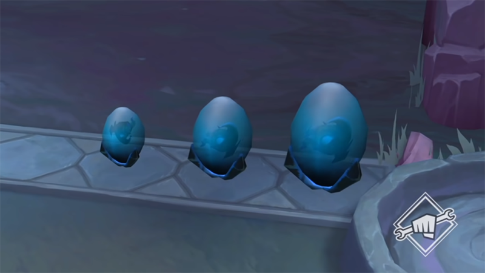Khi bắt đầu, toàn bộ người chơi sẽ nhận 1 quả trứng rồng. Sau một khoảng thời gian nhất định, trứng càng lâu nở thì vật phẩm càng giá trị, quả trứng rồng này sẽ nở ra và đem đến cho tất cả người chơi các phần quà giống nhau, khá giống với cơ chế của phiên bản cuối cùng của mùa 6.5.
Tướng 5 vàng
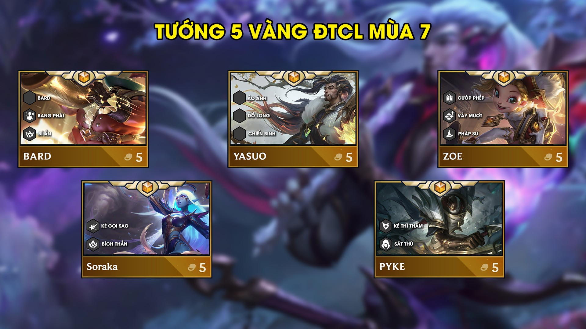1.Yasuo
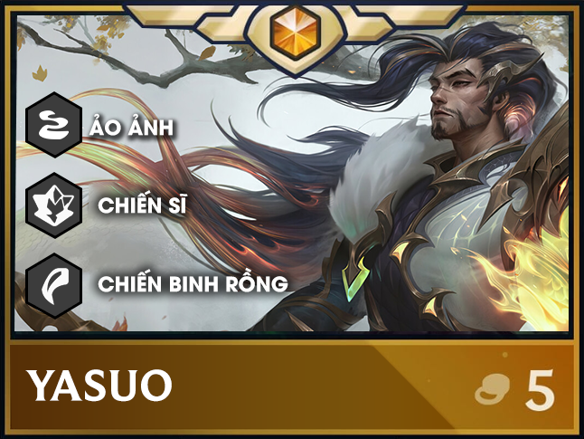Kỹ năng: Yasuo nhận một lớp giáp, lướt tới kẻ địch và xoay kiếm, gây sát thương vật lý trong 1 vùng xung quanh. Mỗi lần dùng chiêu thứ 3, xoáy kiếm 1 vùng rộng hơn, gây gấp 3 lần sát thương và hất tung những mục tiêu trúng phải. Nếu Yasuo dùng chiêu trúng kẻ địch cuối cùng còn sống sót, hắn sẽ thực hiện kỹ năng xoáy kiếm tới khi mục tiêu bị hạ gục.
2.Soraka
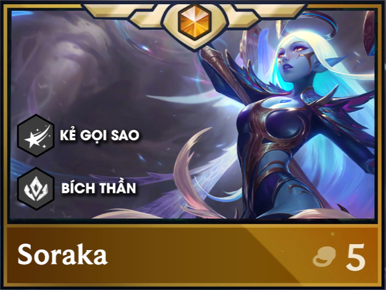KỸ NĂNG: NGUYỆN ƯỚC
Nội tại: Khi Soraka xuống dưới 50% máu, cô nhận thêm 5 năng lượng mỗi đòn đánh
Kích Hoạt: Soraka triệu hồi một cơn mưa sao trong 2 giây tiếp theo, mỗi khi một ngôi sao đáp xuống đồng minh, họ được hồi một lượng máu
Tộc Kẻ Gọi Sao
Soraka sử dụng kỹ năng lần đầu, cô hồi máu cho Linh Thú dựa trên cấp sao là của Soraka 2/4/100 máu
3.Bard
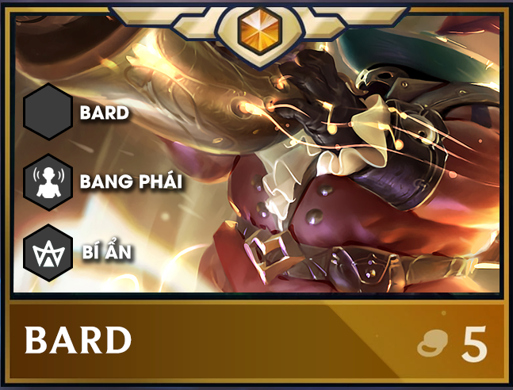Kỹ năng: Thiên Mệnh Khả Biến
Bard phóng thích năng lượng vào một vị trí, khiến tất cả các đơn vị trúng phải bị choáng trong vài giây và tăng 20% sát thương mà chúng phải nhận . Nếu kỹ năng của Ông trúng một mục tiêu, Bụt sẽ nhảy múa để ăn mừng
Tộc Bard ( tạm dịch Ông Bụt Vũ Trụ)
(1): Những đồng minh sống sót sau mỗi trận chiến có 10% có hội tao ra một Nốt Nhạc. Mỗi Nốt Nhạc, cửa hàng của bạn sẽ được tăng thêm 1% tỉ lệ tìm tướng 3,4,5 vàng.
4.Zoe
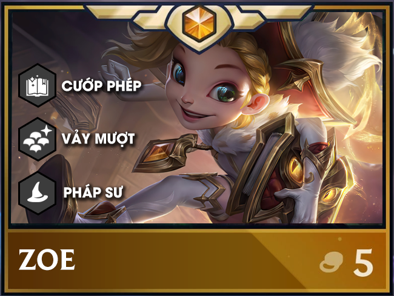Zoe không có kỹ năng của riêng mình, cô là một kẻ trộm phép, cố ấy sẽ sử dụng những các kỹ năng mình "chôm được" từ nhiều vũ trụ khác nhau
TỘC: CƯỚP PHÉP
- - SET 1 KAYLE : Kayle tạo giáp bảo vệ đồng minh yếu nhất, giúp - mục tiêu miễn nhiễm sát thương.
- - SET 3.5 JANNA: Tạo lốc xoáy hất tung địch, tăng tốc đánh cho đồng minh
- - SET 5 IVERN : Triệu Hồi Daisy
- - SET 6 LUX: Cầu vồng tối thượng gây sát thương đường thẳng
5.Pyke
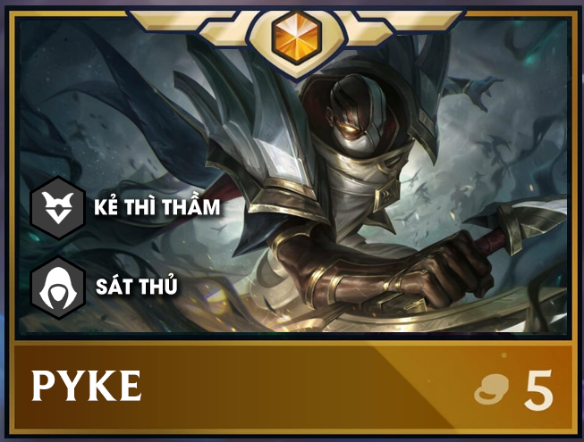Kỹ năng Tử Thần Đáy Sâu
Pyke tấn công một vùng hình chữ X, gây sát thương phép lên mục tiêu và gây thêm 50% sát thương cho những kẻ địch trúng đòn kề bên trong 8 giây. Nếu Pyke giao tranh với những kẻ địch dưới 30% máu, anh ta sẽ kết liễu chúng và ngay lập tức hồi lại kỹ năng Tử Thần Đáy Sâu